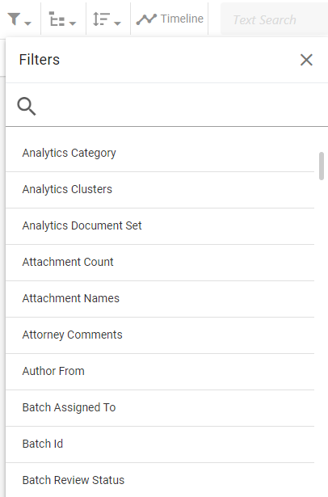
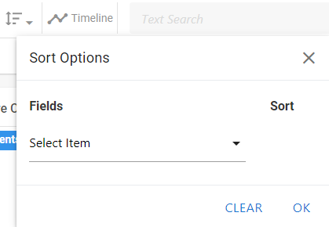

In

Click the Enter Case button in the bottom-right corner. The Visual Search dashboard appears.

Define your visual search. The steps below describe criteria you can add to modify the scope of your search. Note that adding criteria does not automatically run the search. When you are ready to run the search, click the Search button in the top-right corner of the screen.
|
|
Note: The steps below are optional methods for modifying the scope of your search. You can complete one or all, depending on how focused you would like the search to be. The steps are listed in the order of one common workflow scenario. However, you can complete them in whatever order you like. |

To search for a specific term or phrase, type the search expression into the main search bar. Hit Enter on your keyboard or select the magnifying glass beside the search bar to add the expression as a search criterion. A chip appears beneath the search bar that displays the term used in the search.

Once the search expression has been entered, you can continue defining the visual search by selecting additional criteria, or you can run the search by clicking the Search button in the top-right corner of the screen.
|
|
Note: You can only input one search expression when defining a visual search. Entering a second expression into the main search bar replaces the first. |
Apply a Search Filter to further refine your search results:
-
Select the Filters icon in the top-left corner of the screen.

-
Select one of the filter options in the Filters drop-down menu.

- Once a filter has been selected, the drop-down menu changes to display additional options. From here, choose the needed operator, select any required checkboxes, or type in specific search terms depending on the filter chosen. For more information on the options available when defining a search filter, see Define a Field-Specific Search.
- Once the filter has been defined, click OK to add the new filter to your search definition.
-
Continue defining the search by selecting additional criteria, or run the search by clicking the Search button in the top-right corner of the screen.
When performing a search that requires the use of a search relationship, use the Relationships drop-down menu:
-
Select the Relationships icon in the top-left corner of the screen.

-
Choose what relationship you would like to include in the search. You can only select one from the list. For more information about relationships, as well as a definition for each relationship in the list, see Overview: Relationships.

- Once a relationship has been selected, click OK to add the relationship to your search definition. The Relationships icon highlights blue to indicate that a relationship has been selected.
-
Continue defining the search by selecting additional criteria, or run the search by clicking the Search button in the top-right corner of the screen.
To sort specific fields in the search results grid in ascending or descending order, use the Sort Options dialog box:
-
Select the Sort Options icon in the top-left corner of the screen.

-
In the dialog box that opens, select the field you would like to sort from the drop-down menu.

- Once a field is selected, set whether the field should be sorted in ascending or descending order. An arrow pointing up means ascending order, while an arrow pointing down represents descending order. Simply click the arrow to reverse its direction. The default sort order is ascending. This means that the field displays records of numerical value from lowest to highest, or records starting with a letter in alphabetical order. Descending order displays records from highest value to lowest.
- If necessary, select additional fields and choose their sort order by completing the procedure described above. When you sort based upon multiple fields, the order of the sorting is based on the order in which the fields are selected. For instance, if you chose to sort Custodian as ascending for your first field, and BEGDOC as descending for your second field, the search results grid displays any Custodians that begin with the letter "A" before Custodians that begin with the letter "B." However, the records associated with each custodian are displayed in order of highest BEGDOC number to lowest.
- Once all fields have been selected for sorting, click OK to apply the sort order to the search definition. The Sort Options icon highlights blue to indicate that a sort order has been selected.
-
Continue defining the search by selecting additional criteria, or run the search by clicking the Search button in the top-right corner of the screen.
Select date criteria for the search by means of the Timeline:
-
Select the Timeline icon in the top-left corner of the screen.

The Timeline opens across the top of the dashboard.
-
Choose the date field you would like to use when running the Timeline search.
-
Select the range of dates you would like to limit the scope of the search to. You can input these dates manually by typing them into the Filter Dates fields, or select them by clicking and opening the calenders beside the fields. The first field is the start date and the second field is the end date. Additionally, you can select a date range of interest by clicking on the Timeline itself and dragging right or left as required to define the range of interest. For more information on selecting a date range, see Work with the Visual Search Dashboard.
-
Optional: Select the Include Empty/Invalid Dates option to include into the document set documents that contain date problems.
- When finished defining your Timeline search, close the Timeline by selecting the X icon in the top-right corner of the Timeline dialog box. The Timeline icon highlights blue to indicate that the date range has been added to the search definition.
-
Continue defining the search by selecting additional criteria, or run the search by clicking the Search button in the top-right corner of the screen.
Once you have added all your criteria to the search definition, run the search by selecting the Search button in the top-right corner of the screen. Alternatively, you can save the search by selecting the Save option instead. For more information about saving searches , see Work with Saved Searches.